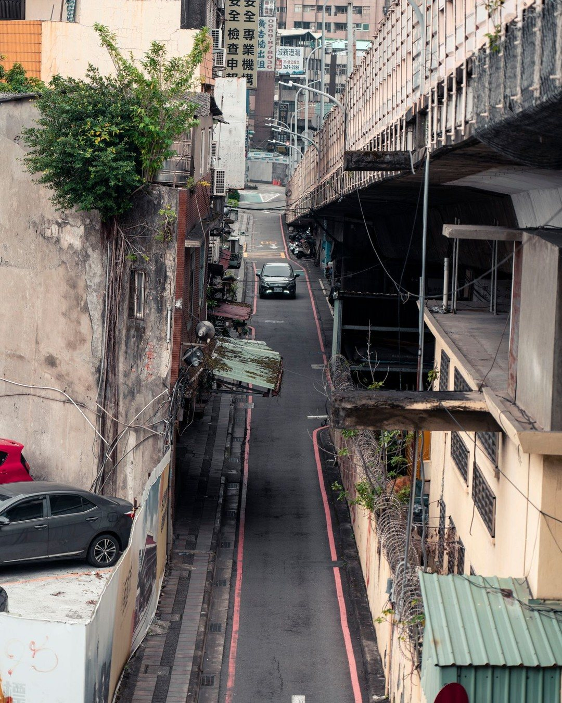
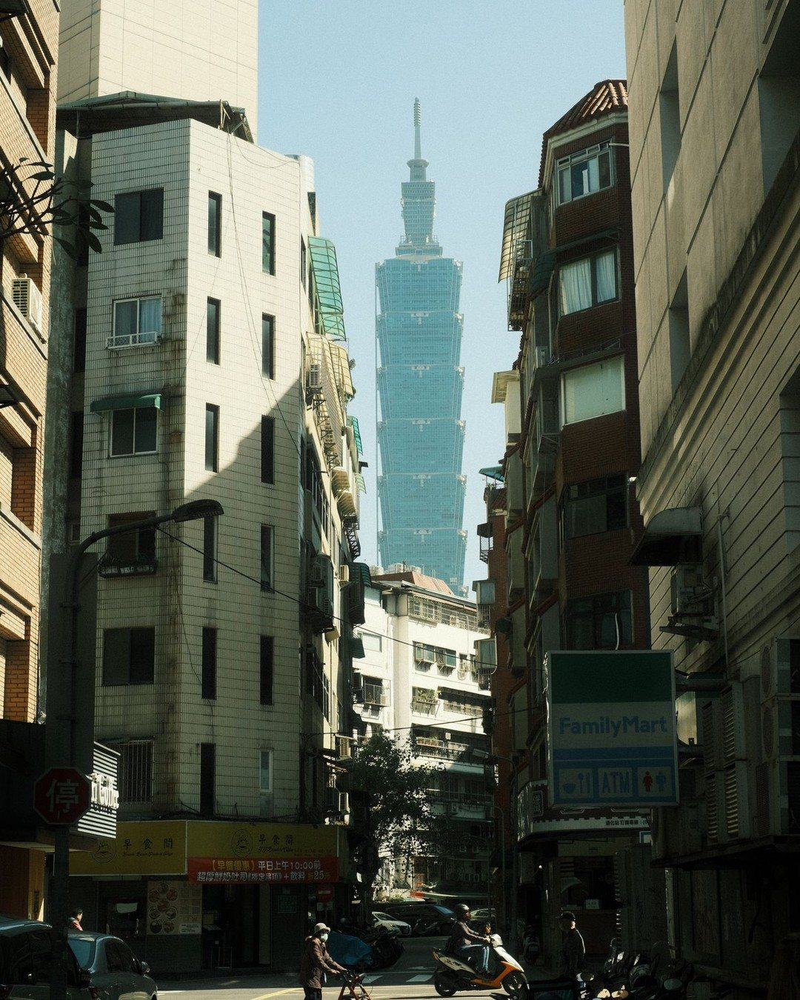
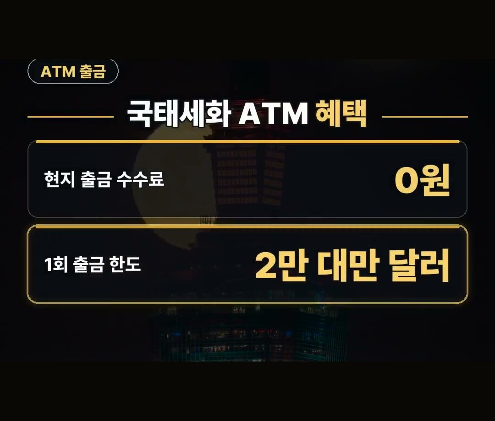
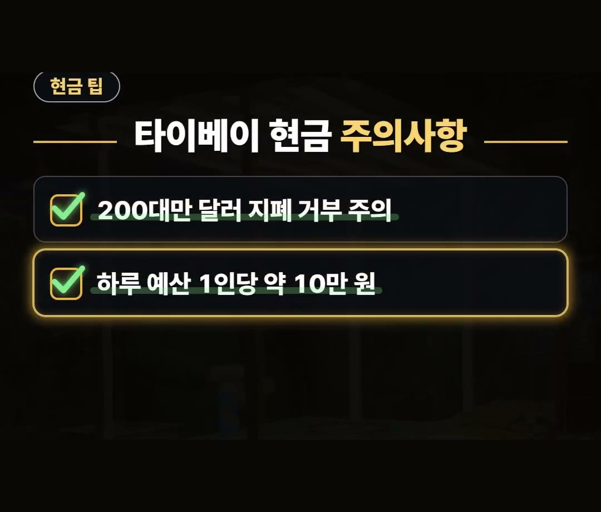
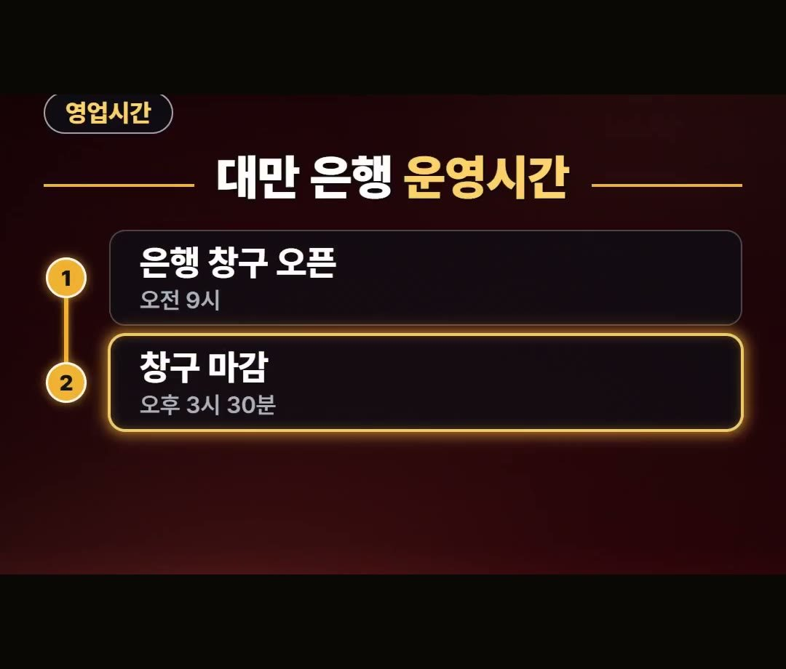

타이베이 여행 환전 팁 알고 수수료 절약하는 방법
※ 이 글에는 제휴 링크가 포함되어 있으며, 링크를 통해 예약·구매하시면 일정 수수료를 받을 수 있습니다. (가격은 같습니다)
※ 이 포스팅은 쿠팡 파트너스 활동의 일환으로, 이에 따른 일정액의 수수료를 제공받습니다.
타이베이 여행을 준비할 때 현지 수수료를 줄이기 위해서는 국태세화은행 ATM 이용 조건과 환전 시 주의사항을 미리 확인하는 것이 가장 중요하며 자세한 내용은 아래에서 자세히 설명해 드릴게요.

대만 여행 전 환전 조건을 잘 챙겨야 수수료를 줄일 수 있어요.
2026년 10월 기준 현지 공항은 건당 30대만 달러 수수료가 들고 트래블 카드로 국태세화은행 ATM 이용 시 출금 수수료 0원이 적용되니 꼭 기억하세요! 💳
한국 은행 환전과 대만 공항 현지 수수료

타이베이 여행 환전 팁을 찾아보시는 분들이 많습니다.
한국 은행에서 미리 환전하는 경우 우대율이 은행과 신청 방법에 따라 달라집니다.
- 현지 공항 수수료: 건당 30대만 달러 (2026년 10월 기준)
미리 확인하지 않고 현지 공항에서 환전하면 건당 수수료가 들어갈 수 있으니 출발 전 미리 챙겨 두시는 것이 좋습니다.
국태세화은행 ATM 수수료 0원 이용 방법

트래블 카드를 활용해 국태세화은행 ATM을 이용하면 현지 출금 수수료를 줄일 수 있습니다.
- 현지 출금 수수료: 0원 (카드에 따라 다름)
- 1회 출금 한도: 2만 대만 달러 (약 84만 원 수준)
카드 종류에 따라 수수료 혜택이 다를 수 있으니 이용 전에 미리 확인해야 합니다.

출금 과정에서 4% 마진이 붙는 즉시 환전 화면이 뜨면 환전하지 않는 쪽을 선택하는 것이 좋습니다.
카드와 기기에 따라 수수료가 추가로 붙을 수 있습니다.
타이베이 현금 사용 시 주의사항

현지에서 현금을 사용할 때 미리 알고 있어야 할 점도 있습니다.
- 200대만 달러 지폐: 작은 가게에서 거부당할 수 있음
- 야시장용 현금 추천 예산: 1인당 하루 약 10만 원
작은 가게에서는 200대만 달러 지폐를 받지 않는 경우가 있으니 결제 시 주의가 필요합니다.
야시장을 방문할 계획이라면 1인당 하루 약 10만 원 정도의 현금을 준비하는 것을 추천합니다.
대만 은행 운영시간과 데이터 준비

시중 은행 창구를 직접 이용해야 할 상황이 생길 수 있으니 영업시간을 미리 파악해 두세요.
- 은행 창구 오픈: 평일 오전 9시
- 창구 마감: 평일 오후 3시 30분
시중 은행 영업시간은 평일 오전 9시부터 오후 3시 30분까지입니다.
여행 중 데이터는 이심으로 편하게 준비하실 수 있습니다.
정리
1. 2026년 10월 기준 대만 현지 공항 환전 시 건당 30대만 달러 수수료가 발생합니다.
2. 트래블 카드로 국태세화은행 ATM 이용 시 출금 수수료 0원이며 1회 한도는 2만 대만 달러(약 84만 원)입니다.
3. 200대만 달러 지폐는 작은 가게에서 거부당할 수 있고 야시장용 현금은 1인당 하루 약 10만 원을 추천합니다.
최저가 예약 링크는 아래에 모아 두었어요.
지금 쓸 수 있는 여행사 할인
- 📶 해외 데이터는 이심으로 미리 · 마이리얼트립 마이심 「대만 50% 1,200원~」 · 2개 이상 추가 할인 (마이심 화면 표시 기준 · 10/5 확인 · 값은 바뀔 수 있음)
※ 여행사 사정으로 조건이 바뀌거나 일찍 끝날 수 있어요. 예약 전에 여행사 화면에서 한 번 더 확인하세요. (2026-10-05 확인)
📌 2026년 10월 기준 정보예요. 가격은 환율·시기에 따라 달라질 수 있어요.
영상 화면: Pexels (Khaoula ATTAR, Timo Volz)
사진: Pexels (Jimmy Liao, Guilherme Christmann, Timo Volz)